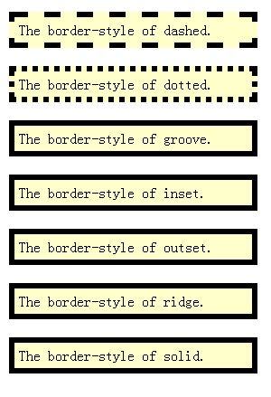

深入理解盒子模型
盒子模型是CSS控制页面的基础。需要清楚“盒子”的含义是什么，以及盒子的组成。此外，应该理解DOM的基本概念，以及DOM树是如何与一个HTML文档对应的，在此基础上充分理解“标准流”的概念。
3.1 盒子的内部结构
padding-border-margin模型是一个极其通用的描述矩形对象布局形式的方法。这些矩形对象被统称为”盒子“，英文为”Box“。 模型 就是对某种事物的本质特性的抽象。
在CSS中，一个独立的盒子模型由content(内容)、border（边框）、padding(内边距)和margin（外边距）4个部分组成。
一个盒子实际所占有的宽度（或高度）是由”内容+内边距+边框+外边距“组成的。在CSS中可以通过设定width和height的值来控制内容所占的矩形的大小。
3.2 边框（border）
border一般用于分隔不同元素，border的外围即为元素的最外围，因此计算元素实际的宽和高时，就要将border纳入。
border的属性主要有3个，分别是 color（颜色）、width（粗细）和style（样式）。在使用CSS设置边框的时候，可以分别使用 border-color、border-width、border-style设置它们。
border-color指定border的颜色。通常设置为十六进制的值，如#336699，可以缩写为 #369
border-width指定border的粗细程度，可以设为thin、medium、thick和<length>（指具体的数值）。 默认值为”medium“，一般浏览器解析为2px宽。
border-style，可以设为 none、hidden、dotted、dashed、solid、double、groove、ridge、inset和outset等。其中none和hidden都不显示border，在运用表格中时，hidden可以用来解决边框冲突的问题。
3.2.1 实验1-border-style

3.2.2 属性值的简写形式
1. 对不同的边框设置不同的属性值
设别设置border-color,border-width,border-style这3个属性，是对上下左右4个边框同时产生作用。还可以设置不同属性值：
A. 如果给出2个属性值，前者表示 上下边框的属性，后者表示 左右边框；
B. 如果给出3个属性值，前者表示上边框的属性，中间数值表示左右边框的属性，后者表示下边框的属性；
C. 如果给出4个属性值，依次表示：上、右、下、左边框的属性，即顺时针排序。
2. 对一条边框设置与其他边框不同的属性。如设置左边框的颜色为红色，可写作：border-left-color:red;
当有多条规则作用于同一个边框时，会产生冲突，后面的设置会覆盖前面的设置。
3.2.3 实验2-属性的缩写形式
3.2.4 实验3-边框与背景
在给元素设置background-color背景色时，IE作用的区域为 content+padding，而Firefox则是 content+padding+border。
3.3 内边距（padding）
padding 又称为内边距，用于控制内容与边框之间的距离。
当一个盒子设置了背景图像后，默认情况下背景图像覆盖的范围是padding和内容组成的范围，并以padding的左上角为基准点平铺背景图像。
IE浏览器： 背景色覆盖 padding+内容； 火狐浏览器 border+padding+内容。
3.4 外边距 （margin）
margin指的是元素与元素之间的距离。
从直观上而言，margin用于控制块与块之间的距离。倘若将盒子模型比作展览馆里展出的一幅幅画，那么content就是画面本身，padding就是画面与画框之间的留白，border就是画框，而margin就是画与画之间的距离。
3.5 盒子之间的关系
CSS规范的思路是：首先确定确定一种标准的排版模式，这样可以保证设置的简单化，各种网页元素构成的盒子按照这种标准的方式排列布局。这种方式就是”标准流"方式.
3.5.1 HTML和DOM
DOM是 Document Object Model的缩写，即“文档对象模型”。一个网页的所有元素组织在一起，就构成了一个棵“DOM”树。
一个HTML文档并不是一个简单的文本文件，而是一个具有层次结构的逻辑文档，每一个HTML元素都作为这个层次结构中的一个节点存在。每个节点反应在浏览器上回具有不同的表现形式，具体的表现形式是由CSS来决定的。
CSS的目的是使网页的表现形式与内容结构分离，CSS控制网页的表现形式，HTML控制网页的内容结构。
3.5.2 标准文档流
1. 块级元素（block level）
总是以一个块的形式表现出来，并且跟同级的兄弟块依次竖直排列，左右撑满。
2. 行内元素（inline）
标记本身不占有独立的区域，仅仅实在其他元素的基础上指出了一定的范围。
行内元素在DOM树种同样是一个节点。从DOM的角度来看，块级元素和行内元素是没有区别的，都是树上的一个节点；而从CSS的角度来看，二者有很大的区别，块级元素拥有自己的区域，行内元素则没有。
标准流就是CSS规定的默认的块级元素和行内元素的排列方式。
3.5.3 <div>标记和<span>标记
<div>是一个块级元素，他保卫的元素会自动换行。而<span>仅仅是一个行内元素，在它的前后不会换行。
3.6 盒子在标准流中的定位原则
3.6.1 实验1-行内元素之间的水平margin
当两个行内元素紧邻时，他们之间的距离为 第一个元素的 margin-right 加上第2个元素的margin-left。
3.6.2 实验2-块级元素之间的竖直margin
两个竖直块级元素之间的距离不是margin-bottom与margin-top的总和，而是两者中的较大者。这个现象称为 margin 的“塌陷”现象。
3.6.3 实验3-嵌套盒子之间的margin
如果父div的高度值小于子块div的高度加上margin的值，此时IE浏览器会自动扩大，保持子元素的margin-bottom的空间以及父元素自身的padding-bottom。而firefox会保证父元素的高度完全吻合，子元素会超出父元素的范围。
CSS规范中有四个宽度和高度的相关属性，为：min-height、max-height、min-width、max-width。 IE浏览器不支持。
3.6.4 实验4- 将margin设置为负值
当margin设为负数时，会使被设为负数的块向相反的方向移动，甚至覆盖在另外的块上。


则其在非IE下的样式为：
但在IE下为：
<!DOCTYPE html>声明（不要进入混杂模式），告诉IE采用W3C盒子模型即可。